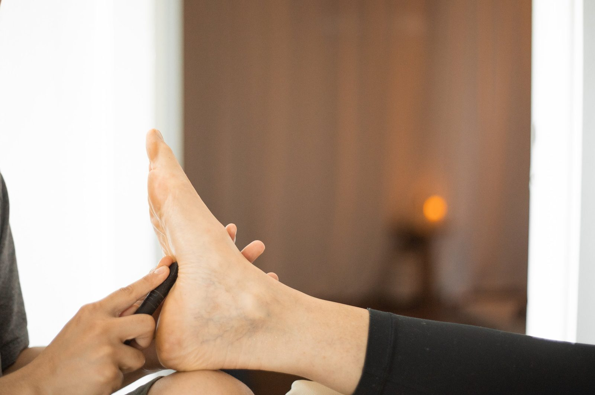

Boost Your Well-being with Foot Reflexology: A Path to Relaxation and Healing

In today’s fast-paced world, stress and fatigue have become common companions. Many people are turning to holistic practices for relief, and one of the most effective methods is foot reflexology. This ancient therapy focuses on applying pressure to specific points on the feet, which are believed to correspond to various organs and systems in the body. By stimulating these reflex points, foot reflexology helps restore balance, improve circulation, and promote overall well-being. Here’s why you should consider adding foot reflexology to your self-care routine.
The Basics of Foot Reflexology
Foot reflexology is based on the principle that the feet are a mirror of the body. Reflexologists believe that different areas of the feet correspond to specific organs, glands, and other parts of the body. By applying pressure to these areas, reflexology helps to clear energy blockages, promoting better health and well-being. Although foot reflexology is often associated with relaxation, it can also provide targeted relief for specific ailments.
Benefits of Foot Reflexology
- Stress Relief and Relaxation
The best part of foot reflexology is ability to reduce stress. The pressure applied to reflex points stimulates the nervous system, promoting deep relaxation. This helps to lower cortisol levels, the hormone responsible for stress, allowing the body to heal and rejuvenate. Many people find reflexology sessions to be deeply calming, making it a perfect way to unwind after a long day. - Improved Circulation
Regular foot reflexology treatments can help improve blood flow. By stimulating specific reflex points, reflexologists encourage better circulation, which helps deliver oxygen and nutrients to cells more efficiently. This boost in circulation can lead to faster healing and a sense of increased vitality. - Pain Relief
Reflexology has been shown to provide relief from pain, especially in areas such as the feet, legs, and lower back. It can also help with chronic conditions like arthritis and migraines. By working on the pressure points, reflexologists can alleviate tension and discomfort, often without the need for medication. - Enhanced Mood and Mental Health
Regular reflexology sessions can have a positive impact on your mental health. Many people report feeling less anxious and more balanced after treatments. Reflexology encourages the release of endorphins, the body’s natural feel-good hormones, which can help combat depression, anxiety, and other mood disorders. - Better Sleep
If you struggle with insomnia or other sleep-related issues, reflexology could be a game changer. By calming the nervous system and reducing stress, reflexology can help regulate your sleep patterns. Many people find that a session before bed leads to deeper, more restful sleep.
How Does Foot Reflexology Work?
During a reflexology session, the practitioner will apply pressure to specific points on your feet using their thumbs, fingers, and sometimes tools. Each reflex point is thought to correspond to a specific organ or system in the body. For example, the tips of your toes are believed to be linked to the head and brain, while the heel corresponds to the lower back and intestines.
The pressure applied during reflexology helps to break up congestion in these areas, improving the flow of energy (also called “Qi” in traditional Chinese medicine). As a result, reflexology supports the body’s natural healing processes and helps restore balance to both the mind and body.
Is Reflexology Right for You?
Reflexology is a gentle, non-invasive therapy that can benefit almost everyone. Whether you’re dealing with stress, pain, or simply want to enhance your overall well-being, reflexology offers a natural and holistic way to support your health. However, it’s important to consult with a healthcare professional if you have any medical conditions or concerns, especially if you’re pregnant or dealing with a chronic illness.
How to Get Started with Foot Reflexology
Many spas, wellness centers, and holistic practitioners offer foot reflexology sessions. When choosing a reflexologist, look for someone who is certified and experienced to ensure you receive the best possible care. You can also try some basic foot reflexology techniques at home using a reflexology chart and a simple massage roller or even your hands.
Conclusion
Foot reflexology is a powerful tool for promoting relaxation, relieving stress, and supporting your overall health. By focusing on the body’s natural healing abilities, reflexology helps restore balance and harmony to the body and mind. So, if you’re looking for a simple yet effective way to boost your well-being, consider giving foot reflexology a try. You might just find that it’s the perfect addition to your self-care routine!